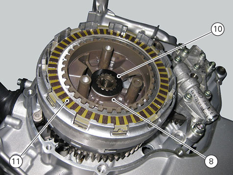
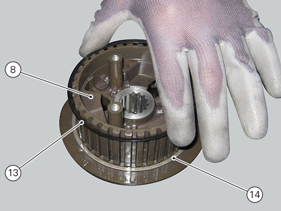

Removal of the clutch
Remove the oil sump guard (
Removing the oil sump guard
).
Drain the engine oil (
Changing engine oil and filter cartridge
).
Remove the clutch cover (
Removing the clutch cover
).
Note
For clarity, the figures show the engine removed from the frame.
Undo the fixing screws (1) and remove the ring (2) and the springs (3) from the pusher plate (4).
Slide the pressure plate (4) paying attention to the circlips (5).
Remove the clutch control pin (6) and the bearing (7).
Lock the clutch drum (8) using the appropriate tool no.
88713.3408
, undo the fixing nut (9).
Remove the Belleville washer (10), slide the clutch drum (8) and remove the plates (11) from the clutch housing.

When removing the discs (11), keep them paired in the assembly order and set them aside tied together, if necessary.
Slide out the spacer (12).
Withdraw the Belleville washer (13) and flat ring (14) from the clutch drum (8).
